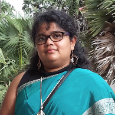

|
 |
Email: sahely at iitpkd dot ac dot in
|
Research Area
Machine Learning, Optimization
Multi-view data, Time-series data
Bioinformatics
Sponsored Projects
Core Research Grand (CRG) from SERB, DST funded Project titled "Robust Multi-view Learning for Extreme Events Detection and Prediction in Time Series Data“. 2021-2024.
Cyber-Physical Systems in Collaboration with Artificial Intelligence for Smart Agriculture (as Co-investigator ) a project in TIH of IITPalakkad]
Naval Research Board funded “Ocean Acoustic Data Archival and Analytics Framework”.2021-2023
Ministry of Education (MEC) Global Programme of Finland funded “AI Technologies for Computational Systems Biomedicine”
(2022-2023)
Global Research Partnerships Development Fund, UK funded for “Responsible Disinformation Detection with an Emphasis on Global South.”(2022-2023)
Awards
Indo-Finish Mobility grand 2019-2020 from DST and Academy of Finland (June-July 2019).
IMPECS postdoc fellowship, 2012-2014.
IBM Ph.D. Fellowship Award 2010 - 2011.
Best Runner Up paper award in PAKDD, 2009.
Students
PhD.
Ms Jishy (since August 2019, External registration)
Ms Vinitha Rajan (since August 2021)
Mr Vishnu B (since January 2022)
Mr Ankit (since August 2022)
Graduated Research Scholars
Graduated MTech. Students who did good project under me
Mr Chandan (2022-2024) : Computer vision
Mr Nitesh (2022-2024) : Non toxic drug generation
Ms Sneha (2020-2022) : Analysis of FRB data
Ms Akshata (2020-2022) : Analysis of road network
Ms Pallavi (2020-2022) : Deep CCA on graphs
Mr Abhichal (2020-2022) : Automatic count of fruits
Graduated BTech. Students done BTP with me
Mohammad hussan (2018-2022):Explainable GNN
Ahmed Zaheer Dadarkar (2017-2021): Extreme Value prediction in Time series data
Vipin Kumar Seth (2017-2021): Rainfall prediction in a small region around Palakkad
Ipsita Singh (2016-2020): Learning Graph Embedding for Graph Classification
Adrian McDonald Tariang (2015-2019): Automated Newspaper Typesetting based on News Values and Prior Editorial Style
Akshat Choube(2015-2019): Study of Multiview Face Synthesis Using Generative Adversarial Networks (GANs)
Anish MM (2015-2019): Unsupervised Lower Dimensional Representation Learning for Time Series Data
Prabal Vashisht (2015-2019): Multi-view data interpretation and completion using Deep Networks
Past positions
Postdoc. Network Science Institute, Northeastern University, USA (Jan, 2017 - May 2017)
Adviser: Tina Eliassi-Rad
Postdoc. Helsinki Institute of Information Technology, Aalto University, Finland (Oct,2014 - Dec,2016)
Adviser: Samuel Kaski, Juho Rousu
Postdoc. Max-Planck-Institute for Informatik and Saarland University, Germany (Sep, 2012 - Aug, 2014)
Adviser : Matthias Hein
PhD. Computer Science (Aug, 2006 - Sep, 2012)
Indian Institute of Science (IISc), Bangalore
Adviser: Chiranjib Bhattacharyya
Thesis: Learning Robust Support Vector Machine Classifiers with Uncertain Observations
|